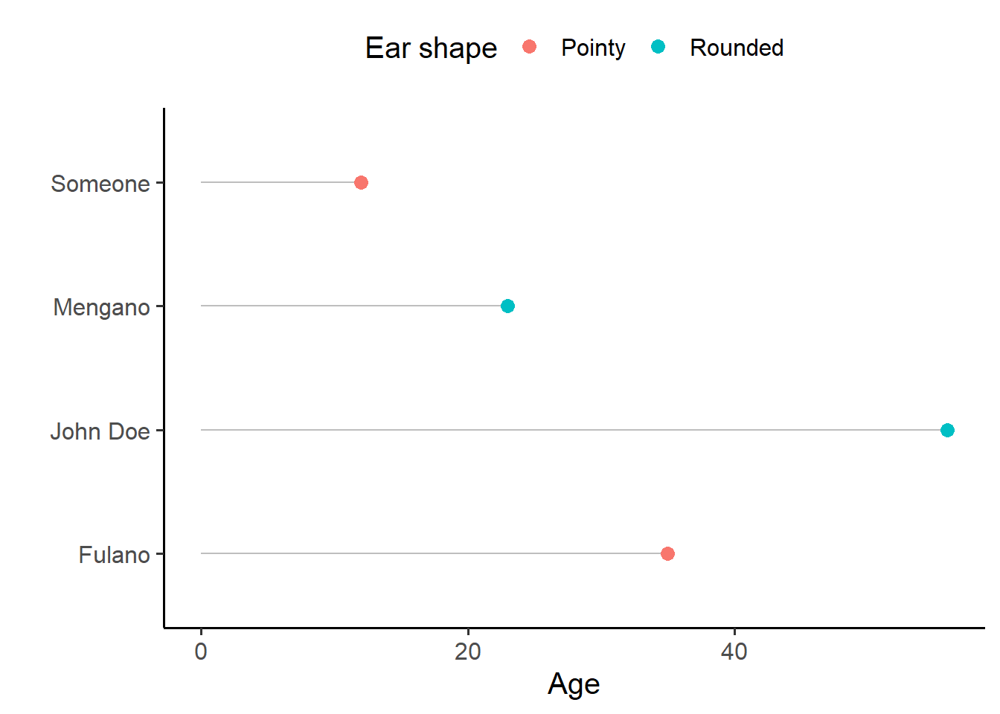

The goal of this assignment is to practice creating tables and plots in Quarto and including cross-references. Cross-references are important in scholarly writing, as they allow you to refer to elements (figures, tables and sections) that are in a different location in your document. In Quarto outputs, they also become hyperlinks the location: by clicking on the reference, you are taken to the appropriate figure/table/section.
For this assignment you can keep working on the same file from the First assignment.
1 Instructions
Create a branch for the assignment, e.g. cross-ref. You will work here and only move your changes to main if and when you want to submit.
Create a Quarto document or work on the one from the previous assignment. Include a figure and/or a table with a caption and write text that introduces/explains it and uses a cross-reference to point to it.
You may also try to add a cross-reference to a section.
Render your Quarto document into the output of your choice (word, html, pdf…).
Stage and commit all the relevant files (see Cheatsheet if you don’t remember how).
Merge the changes into your main branch (see Cheatsheet).
Push the changes to the remote.
Send me an e-mail so I check if it went ok.
2 Tips for the Quarto document
2.1 Invisible chunks
You may add the include: false option to your setup chunk to hide both the code and the result from your final output. For example, I would start my reports with the following chunk:
#| label: setup#| include: falselibrary(tidyverse)library(mclm)# not necessary for THIS notebook, but usually yeslibrary(kableExtra)dataset<-tibble( name =c("Fulano", "Mengano", "John Doe", "Someone"), age =c(35, 23, 56, 12), ear_type =c("Pointy", "Rounded", "Rounded", "Pointy"))
2.2 Chunks with output
For tables and figures, you can either copy code from the slides from previous lessons or do something from scratch as shown below. It doesn’t have to be serious, it just has to be done properly.
You can either add echo: false to your chunks (which will not be shown in the examples below) or add the following lines to the metadata YAML at the top of your .qmd file to make it the default in the whole document:
Table 1 is referenced with @tbl-tblex in the text. Remember that the label of the figure must start with “tbl”, the caption must be set with “tbl-cap” and the caption location may be set with “tbl-cap-location”. A margin caption will only be shown in the margins in HTML output if the viewport is wide enough (for responsiveness). By default, the margin location of a table is at the top.
```{r}#| label: tbl-tblex#| tbl-cap: Age and ear shape of people invented for this exercise.#| tbl-cap-location: marginkbl(dataset, col.names =c("Name", "Age", "Ear shape")) %>%kable_paper()```
Name
Age
Ear shape
Fulano
35
Pointy
Mengano
23
Rounded
John Doe
56
Rounded
Someone
12
Pointy
Table 1: Age and ear shape of people invented for this exercise.
Figure 1 is referenced with @fig-figex in the text. Remember that the label of the figure must start with “fig”, the caption must be set with “fig-cap” and the caption location may be set with “fig-cap-location”. By default the caption location of a figure is at the bottom.
```{r}#| label: fig-figex#| fig-cap: A lollipop chart showing the ages and ear shapes of people invented for this exercise.ggplot(dataset, aes(x = age, y = name)) +geom_segment(aes(xend =0, yend = name), color ="gray") +geom_point(aes(color = ear_type), size =3) +labs(x ="Age", y ="", color ="Ear shape") +theme_classic(base_size =15) +theme(legend.position ="top")```

Figure 1: A lollipop chart showing the ages and ear shapes of people invented for this exercise.
{ggplot2} syntax
{ggplot2} uses what is called a Grammar of Graphics: layers of instructions on each other. In Figure 1, this is what each line does:
ggplot(dataset, aes(x = age, y = name))
Creates a ggplot object, which is plotted when printing. It assigns it a dataset to read data from and aesthethics. Aesthetics are mappings between columns of the dataset (variables) and markers or characteristics of the plot.
The aesthetics we are assigning are x and y, i.e. the horizontal and vertical axis respectively. The data in the age column of dataset will be mapped to the horizontal axis, while the data in the name column of the dataset (even if it’s categorical) will be mapped to the vertical axis.
Aesthetics can be assigned either in this stage or in a geom_ layer. Aesthetics assigned inside the ggplot() call will be used by all the following geom_ layers unless overriden.
geom_segment(aes(xend = 0, yend = name), color = "gray")
Add a segment geometry, i.e. one line per observation. The aesthetics needed to draw a line are x and xend (the horizontal coordinates for each end of the line) and y and yend (the vertical coordinates for each end of the line). In other words, we will draw a line between (x, y) and (xend, yend).
For these segments, we will use the same x and y values assigned in the ggplot() call, which are inherited automatically. But we will also need to add the values for xend and yend. xend is a constant, 0: we want all the segments to start from \(x=0\) and end at the value of age. yend is equal to y: we want horizontal lines that have the same value at y and yend, i.e. the value of name.
Outside the mapping argument with the aes() call, we can also assign other constants, such as the same color for all elements. These are independent of the dataset. (xend could also have been defined here.) In this case we indicate that the segments must be gray.
geom_point(aes(color = ear_type), size = 3)
Add a point geometry, i.e. one point per observation. We inherit the aesthetics from ggplot() but not those of geom_segment() (which would be meaningless anyways).
color is defined within the aes() call because we want to map the value of ear_type to the colors. size is defined outside, as a constant for all points.
If geom_segment() was called after geom_point(), they would be drawn on top of the points and seen in the overlapping bit.
labs(x = "Age", y = "", color = "Ear shape")
Set the label of the x axis to “Age”, remove the label of the y axis, and set the title of the color legend to “Ear shape”.
theme_classic(base_size = 15)
Set a bunch of default properties for a nice theme. We also ask for the base font size to be of 15 points.
theme(legend.position = "top")
Further refine the theme by stating that the legend should be on top of the plot.
To better understand the effect of each later, I invite you to run the code adding one line at a time and see how the plot changes.
Section 3 is referenced as @sec-git. In order to be able to reference it, you should add {#sec-git} after the heading that needs referencing. Remember also to add the following number-sections: true to your metadata YAML.
3 Git workflow
git status # check that you're on main, nothing to commit...git branch cross-refgit checkout cross-ref# work on your .qmd file, rendergit status # check everything is finegit add .git commit -m"practice with cross-references"# you may also make several commits as you add a figure, a table...git checkout maingit status # check everything is fine. New files should not be theregit merge cross-reference# Now the .qmd file, the rendered file and the help files should be presentgit push# and send me a message!